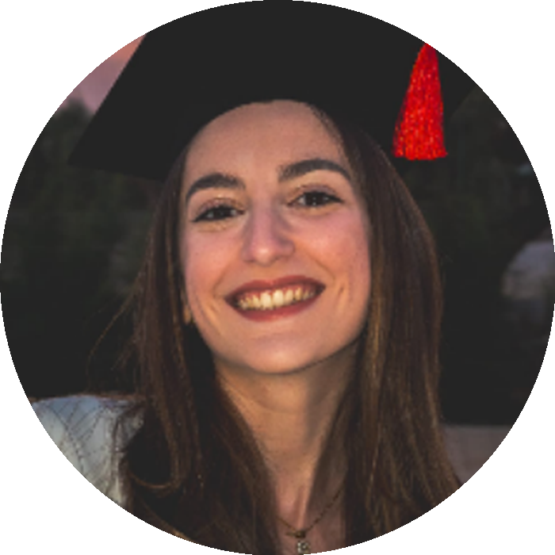

Spagnolo-Italiano · Lingue e Letterature Straniere (LM-37)
Laureata magistrale con il massimo dei voti, attualmente in percorso di abilitazione all'insegnamento della lingua spagnola (TFA II grado). Esperienza in traduzione, interpretariato e didattica, con solide competenze linguistiche, testuali e interculturali applicate in ambito editoriale.
Sono laureata magistrale in Lingue e Letterature Straniere (LM-37) con il massimo dei voti, e attualmente sto completando il percorso di abilitazione all'insegnamento della lingua spagnola con una specializzazione TFA di II grado.
Ho maturato esperienza in traduzione e interpretariato, con solide competenze linguistiche, testuali e interculturali, applicate in ambito editoriale e nella mediazione linguistica e didattica. Sono precisa, responsabile e orientata alla qualità del lavoro e all'approfondimento continuo delle mie competenze.
Incarico di prestazione occasionale come interprete nel corso di videoconferenze e traduttrice di documenti in lingua spagnola per il gemellaggio culturale con la città di Siviglia (Spagna).
Supporto e facilitazione nell'utilizzo del computer e di tutte le procedure online necessarie in ambito professionale e personale.
Gestione chiamate in entrata e uscita, organizzazione dell'agenda, attività di segreteria, consegna dichiarazione dei redditi.
Lezioni individuali su chiarimenti, approfondimenti e supporto grammaticale e teorico del corso di lingua spagnola, con l'ausilio di presentazioni, esercitazioni e schemi.
Lezioni private e insegnamento di un metodo di studio adeguato a ragazzi di scuola secondaria di primo e secondo grado.
Tesi: "Enfermedad mental y psiquiatría franquista: una evolución literaria entre los locos" — analisi della malattia mentale durante la dittatura franchista attraverso tre romanzi spagnoli.
Tesi: "Cervantes in Galdós: il contrasto tra realtà e immaginazione".
Esame svolto a Madrid, rilasciato il 19/02/2024
Cambridge Assessment English, 2018
Valido 14/07/2025 — 13/07/2029
Rilasciato il 10/03/2026
Herzog, 25/09/2024 — 19/11/2024
Lalineascritta, corso di formazione editoriale, 2022
Buona conoscenza teorico-pratica della musica, con lezioni individuali di pianoforte.
Ottima conoscenza del mondo editoriale, delle nuove tendenze e delle uscite in libreria — una passione che si intreccia naturalmente con il percorso di studi in letteratura e traduzione.